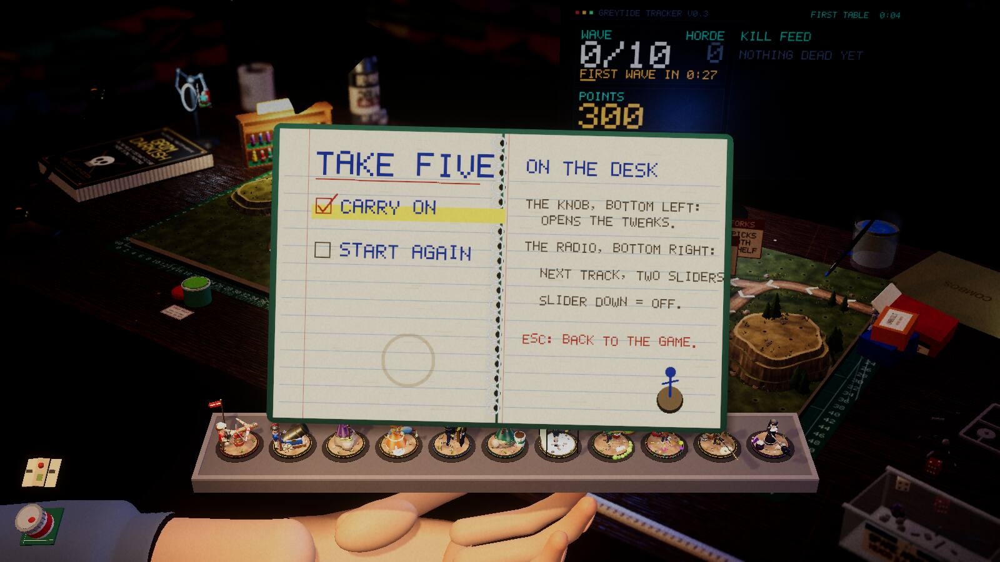
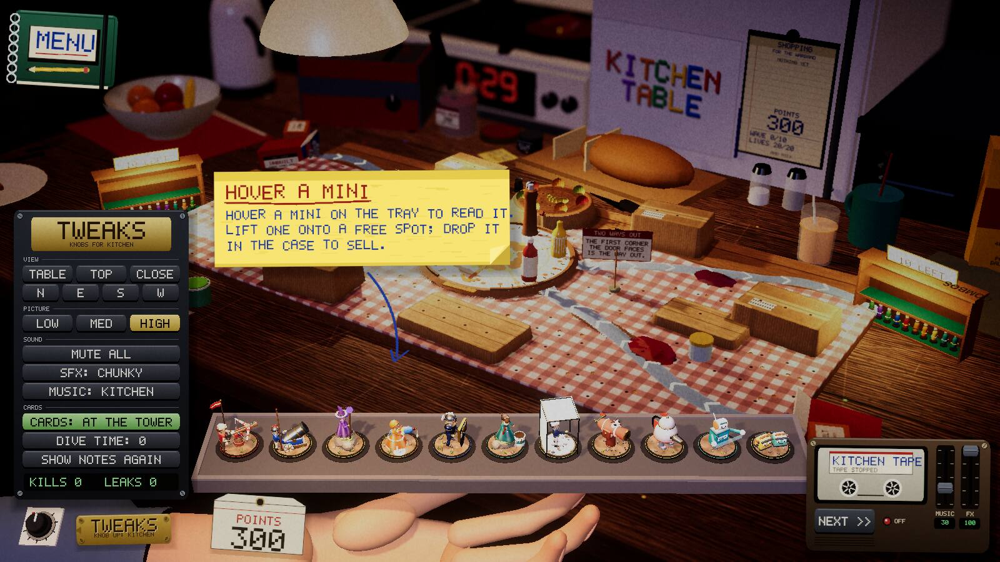
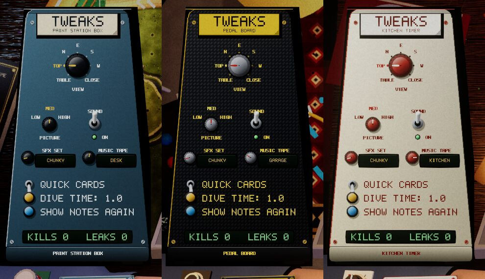
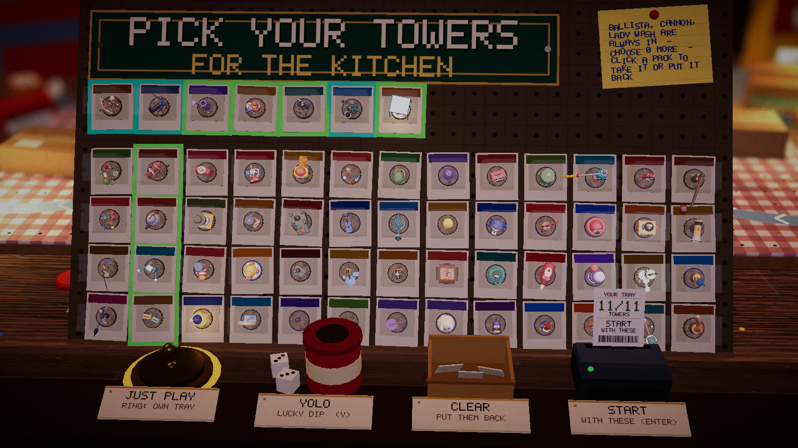

Devlog ·
No flat panels was the brief, and the first pass left one; then the new picker stopped every bot
Four menus were rebuilt as objects on the desk in one morning; the agents found the leftovers in their own screenshots, and one new picker silently stopped every automated test.
The game is supposed to be a desk with toys on it, but its menus were still a screen laid over the desk: a block of points, lives and wave in a corner, a strip of buttons, a dark settings box. The owner asked for the remaining flat text panels to go. Going back to the menu, the cards mode and the music should be things in the room, and the per-table tweaks knob should look like what it is for.
Four things replace the corner
The first worker (issue 444) made the points a flip counter on the tray hand, the menu a notebook, and the music a cassette deck with a NEXT button and two sliders. Hints became sticky notes. Its first shots were wrong twice. The radio sat in the wrong place because the test window had a different shape from the shot size. The first menu shot never finished: opening the menu paused the game clock, and the shot tool waits on that clock. A second worker later redrew the "Quick cards" note, which was still pale paper with pixel text, as a ballpoint sticky; the first version came out too small to read.

The pause menu is a notebook held over the tray. The right page says where the knob and the radio are.
The panel that survived
After the merge the lead looked at the committed screenshot. The tweaks knob had a brass plate, but pressing it opened a flat dark box of button rows. The lead filed a follow-up (issue 515): a flat panel in a nice frame.

Left edge: the board that survived the first pass.
That worker built a leaning console with a skin for each table: a paint-station box, a pedal board, a kitchen timer, each with its own label, paint and knob caps. Its first garage shot showed the console collapsed along the bottom edge. An edit had dropped the layout call, and the log of hit positions, every y value near 950, pointed at it. The cream kitchen skin hid its own highlighted labels because accent and paint were both cream, so highlights now pick a contrasting colour.

The same controls in three table skins. Look at the highlighted labels on the cream one.
The wall that ate the bots
The owner also asked that a single table start with the player picking towers from the whole pool, with a random fill called YOLO. The worker (issue 440) built a wall of blister packs. Its first screenshot showed 55 flat packs lying over the board, because the desk in front of the board is only about 20 cm deep, so the wall became a rack tilted 60 degrees. Its first test command was silently shadowed by an older command of the same name.
Then the lead found that every headless bot run and check on a table now sat at the wall waiting for a click and printed nothing. The log said the remembered choice was "just play", and the wall came up anyway. The worker on issue 501 made automation resolve the wall at once. Its hardest part was not the code: the launch tools pinned work to processors the laptop does not have, so launches failed silently until an override was set.
Seen in a browser, the wall's heading and four buttons were flat banners again. The worker on issue 523 made a printed shop sign, a pinned note, a brass bell for Just play, a tin of dice for YOLO, a basket for Clear and a receipt printer for Start. The faults in its first shot were layout: the receipt towered over the bottom row, a bell tag was clipped and the note ran off the frame.

Look along the bottom: each former button is an object with a paper tag.
Seeing through the scenery
The owner had also said almost every step-down view had scenery in the way. The worker on issue 428 built a check for every build cell. Its first run reported zero blocked cells while the owner's screenshot showed one: the sill's plants and glass ridge have no collision shapes, so the rays passed through. Testing drawn meshes gave 386 of 2,506 cells blocked on 13 tables. After a fade and extra camera poses, 6 remained, all in the garage; a follow-up made those ten cells behind the mixing desk and the big amp unbuildable, and the check now reports none.
What nobody has checked yet
- Any new object with a real mouse or on the Web build: only scripted clicks were used.
- The tweaks console in the step-down view, where it is hidden by design.
- Lives, wave and countdown on every table's own display.
- Whether the owner likes how it looks.
- Neighbouring towers in the step-down check.